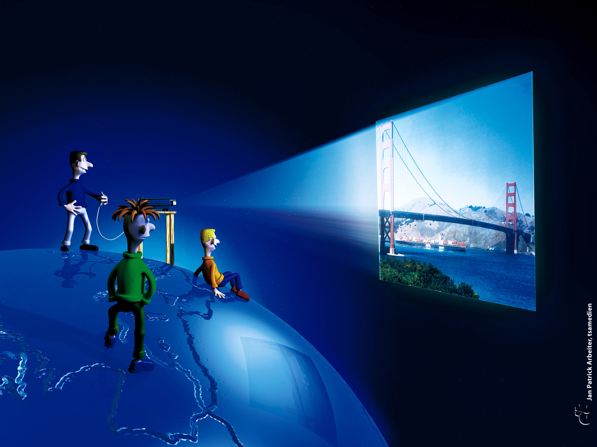
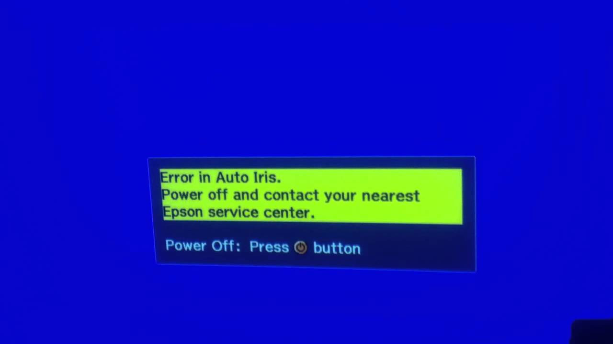
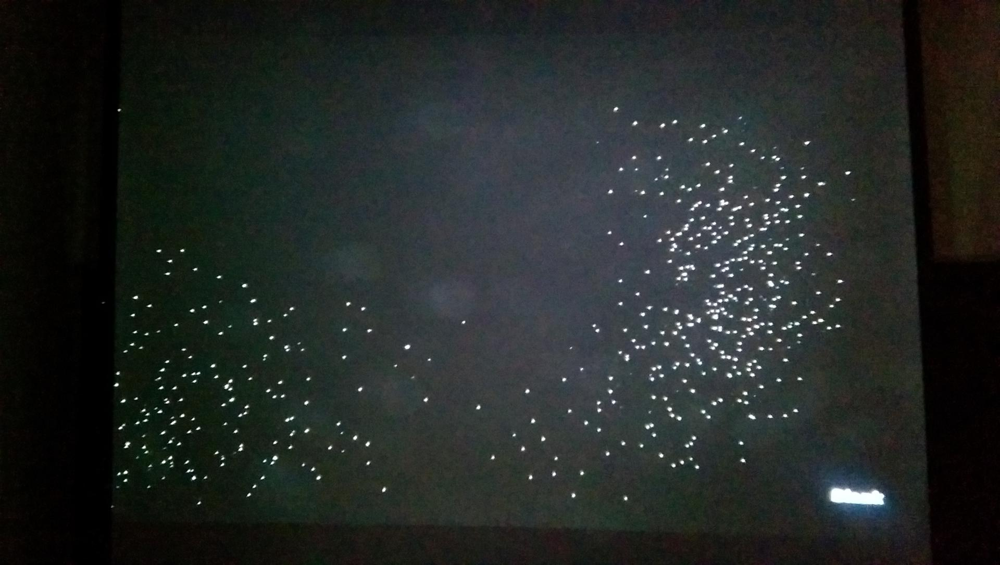

Reparación y Mantenimiento de Proyectores: Infocus, Benq, Viewsonic, Epson, Sony, etc. |
FR & CR Proyectores. Ecuador. Servicio Garantizado para todo el país. informes al número: 0992695177 . Email: reparo.proyectores@hotmail.com |

 |
PROYECTORES MANTENIMIENTO Y REPARACION. GARANTIZADO ! Ingeniero graduado en la ESPE y técnico en electrónica, con 18 años de conocimiento, epecialización y experiencia en la reparación de proyectores en la empresa CR Proyectores & Proyectores Ecuador & CASSO Audiovisuales. El Mantenimiento es para Proyectores de Toda Marca y el costo es NEGOCIABLE. Si son varios equipos el mantenimiento de cada uno cuesta menos. El costo de la Reparación depende el daño del equipo. Servicio Garantizado. (Más de 1000 proyectores he reparado y dado mantenimiento en toda mi trayectoria laboral)
INFORMES AL 0992695177 Ecuador.
Proyectores: BenQ, ViewSonic, Infocus.
Si su proyector indicado no funciona, se apaga solo a los pocos minutos o esta totalmente inerte y es de las siguientes marcas: BenQ: MX711, MP515, MS500, MS510, MP610, MX525, MW853UST y otros modelos semejantes. Se como repararlo !. Además de repararlo realizo mantenimiento preventivo.
En cualquiera de las marcas anteriormente indicadas, si la proyección sale con puntos de luz como "estrellitas", se como solucionarlo.
En cualquiera de las marcas anteriormente indicadas, si la proyección titila y cambia de color, se como repararlo . Proyector EPSON.
- Error de Iris. - Si es Epson modelo S10 o VS200 y esta inerte (no encienden ni las luces indicadoras) - Si es Epson modelo 1775W o 1776W y la lámpara se apaga a los pocos segundos. - Otros modelos de EPSON Se como repararlo !. Además de repararlo realizo mantenimiento preventivo. . . Proyector SONY.
Sintomas del Proyector SONY que no funciona : Además de repararlo realizo mantenimiento preventivo.
Proyector LG.
Si su proyector indicado no funciona, se apaga solo a los pocos minutos o esta totalmente inerte y es del modelo: LG: BS254 Se como repararlo !. Además de repararlo realizo mantenimiento preventivo.
Proyector Optoma.
Si su proyector indicado no enciende la lámpara y es del modelo: Optoma: TX631-3D (DAEXLSG) Se como repararlo !. Además de repararlo realizo mantenimiento preventivo.
Proyector Vivitek.
Vivitek: D510 Se como repararlo !. Además de repararlo realizo mantenimiento preventivo.
SERVICIO DE MANTENIMIENTO PREVENTIVO (PARA PROYECTORES DE TODA MARCA). .
Con el uso del proyector en el transcurso del tiempo, el equipo se llena de polvo, los ventiladores disminuyen su velocidad de rotación o dejan de funcionar, los filtros se llenan de polvo o grasa, y demás poluciones. Esto hace que disminuya la ventilación interna, se acumule calor en el proyector y se dañe la lámpara del equipo u otro elemento electrónico. (El costo de la lámpara de un proyector depende de la marca y modelo, los precios fluctuan: $150, $200, $250, $300 dólares). El mantenimiento debe ser realizado cada 300 horas, para que la lámpara del proyector dure lo preestablecido por el fabricante (de 3000 a 5000 horas, depende de la marca y modelo del equipo).
El mantenimiento preventivo consiste en DESARMAR INTEGRAMENTE EL PROYECTOR para: 1. Limpieza interna (sopleteo de pieza por pieza y limpiacontactos de tarjetas electrónicas y demás elementos) 2. Limpiar, ajustar, alinear y lubricar las aspas de los ventiladores. 3. Limpieza de filtros de aire. 4. Chequeo de los sensores de temperatura, rotación, etc. 5. Limpieza externa de la carcasa del equipo. 6. Seteo correcto de la configuración del equipo. * 7. Resoldar la fuente de poder y balastro. Si es que es necesario. * 8. Limpieza del sistema óptico (lentes, cristales, espejos, prisma de color). Si es que es necesario.
No se incluye cambio de lámpara.
VENTA DE REPUESTOS IMPORTADOS. INTEGRADOS TOP _ _ _YN , etc.
INFORMES AL 0992695177
Ing. Byron R. Reparacion de Proyectores
INFORMES AL 0992695177 Quito - Ecuador
DAÑOS COMUNES DE LOS PROYECTORES, (a solucionarse) :
EPSON: Error de Iris:  .
Luz indicadora de Lámpara: (titila en rojo)
Luz indicadora de Temperatura: (titila en rojo)
BenQ , ViewSonic, etc : Proyección con puntos de luz ("estrellitas")
DAÑO DMD  .
Proyector Sony VPL Desarme integro para mantenimiento: . . .
|


 .
. .
.